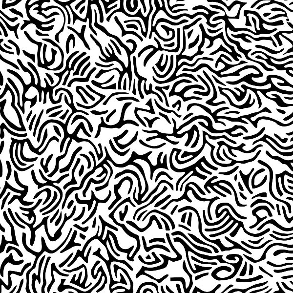

MY O VLKOCH (self entitled) (2017)
 Po prvom poèine nazvanom „DIY Demo 2014“ prichádza košická punkovica MY O VLKOCH s plnohodnotnım, nijako nepomenovanım albumom. Úplnou novinkou sa to nazva� nedá, keï�e sa na nej nachádza zhruba polovica vecí zo spomínaného prvopoèinu, aj keï samozrejme vo vynovenom – a treba poveda�, �e vylepšenom - formáte. Album mi dorazil vo forme CD, èiernobiely booklet so zaujímavım grafickım motívom, kde som síce neprišiel na to, èo presne znázoròuje, ale pripomína mi to také „Against the Grain“ :) Obsahuje texty a krátke info. Navyše pokia¾ viem, kapela plánuje aj vynilovú edíciu.
Ve¾mi struène a jednoducho by som opísal tento album asi ako „proste riadna nakladaèka“. Skladby sa na èloveka valia nehoráznym energickım spádom. Plné melódií, zborov a neskutoène nápaditıch rytmickıch zmien. Ani jedna z 13-tich nepresiahne dvojminútovú hranicu. Tak trošku ma a� zará�a, ako títo chalani doká�u zmesti� kompletnú dávku informácie do tak krátkeho úseku. Minúta a pol zbehne ako niè, ale viem po nej všetko! Ideovo je album zaradenı z ve¾kej èasti do aktuálneho diania, od klasickıch protestsongov proti extrémizmu, cez „fake-news“ problematiku, migraènú tému, peniaze vs. charakter, nábo�enskı fanatizmus a� po menej tradièné témy v našich konèinách oh¾adom školstva, èi tırania �ien.
Zvuk je poriadne surovı, ale maximálne mu to pristane. Charizmatické spevy sa striedajú, ale èasto to na plnú hubu dávajú naraz – aj to je vyriešené vynikajúco. Hudobné vıkony jednotlivıch nástrojov nie sú niè vınimoèné, nezapoèujeme jediné sólo, ale v tomto prípade je to naozaj asi to najmenej podstatné. Chlapi toti� akoby nabrali od prvého zárezu ešte viac odvahy a sebavedomia do svojich prejavov.
Medzi pre mòa najvydarenejšie veci by som zaradil Sonet, (skladbu s najpoetickejším textom na doske, preto�e inak je to všetko pekne narovinu a polopate :), Informaèné kvapky, Fatalisti a taktie� Ma¾ovaná abeceda/Adam s ve¾mi dobrım nápadom a naozaj luxusnım refrénom. Album uzatvára cover s názvom "Závereèná III", skvelá hitovka s vısti�nım príbehom kolobehu �ivota - ve¾mi mi to pripomína novoveskı Big¾ayz, resp. ešte skôr ich starších "bratov" Èo koho do toho.
Tento poèin bandy MY O VLKOCH poèúvam u� dobré tri tı�dne a stále ma to neskutoène baví. Kapelu som ešte na�ivo nevidel (èo je trošku smuté), ka�dopádne ak doká�u prenies� energiu z tohto albumu na pódium, tak som si istı, �e to je peklo! V mojom hodnotení sa takto v rámci roka 2017 košièania dostávajú v tomto �ánri do priameho súboja so SAMORASTom o titul album roka:) Nie len teda na zaèiatok, ale aj na záver fanfára pre tıch, ktorí si uvedomujú, �e punk je viac ako len hudba.
by Krá¾ Balkizár